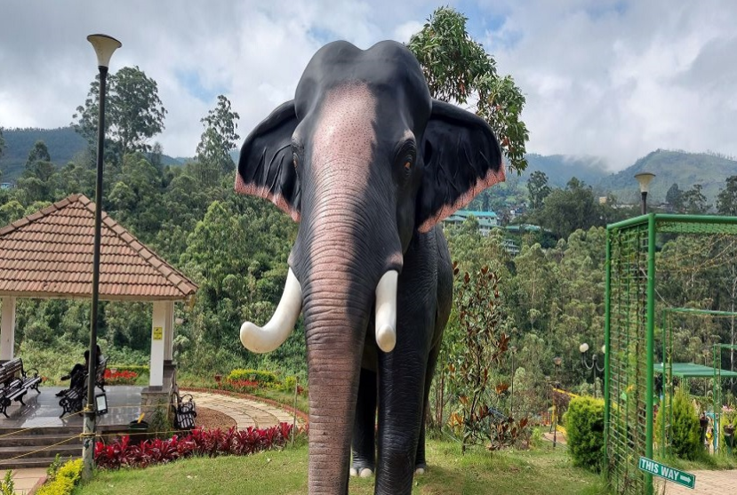

Government Botanical Garden is a well-maintained garden located in Munnar, Kerala. It is home to a large collection of flowering plants, ornamental trees, medicinal herbs, shrubs, and rare plant species. The garden provides visitors with an opportunity to learn about the rich biodiversity of the Western Ghats while enjoying its peaceful and green surroundings.
The beautifully landscaped lawns, colourful flower beds, and walking paths make the garden an ideal place for relaxation and photography. Visitors can explore different varieties of plants, enjoy the fresh mountain air, and experience the natural beauty of Munnar. Government Botanical Garden is a perfect destination for nature lovers, families, and students.

Government Botanical Garden is one of the most beautiful tourist attractions in Munnar, located in Idukki District, Kerala. Developed by the District Tourism Promotion Council (DTPC), the garden is spread over about 5 acres and is home to a wide variety of flowering plants, ornamental trees, medicinal herbs and rare plant species. It is an ideal place for nature lovers, families and photographers. 1
The Government Botanical Garden was developed to promote tourism and create awareness about Kerala's rich plant diversity. Over the years, it has become one of Munnar's most visited attractions because of its beautiful gardens, walking paths and educational displays. 2
The garden features more than 150 varieties of flowering plants, medicinal plants, ornamental gardens, walking paths, an open theatre, children's play area, souvenir shops and beautiful viewpoints. It is also a popular place for photography and relaxation. 3
The garden contains flowering plants, medicinal herbs, spice plants, ornamental trees, shrubs and many native plant species. It provides visitors with an opportunity to learn about the rich biodiversity of the Western Ghats. 4
Today, Government Botanical Garden is one of the leading tourist attractions in Munnar. It offers visitors a peaceful environment, educational displays, colourful flower gardens and excellent opportunities for photography and family outings. 5